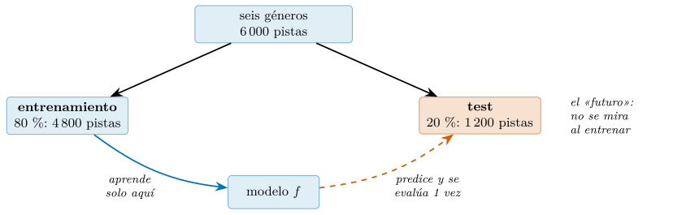
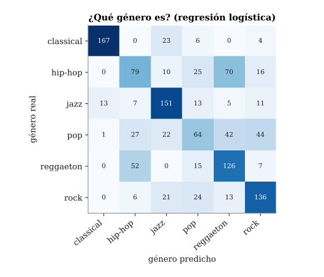
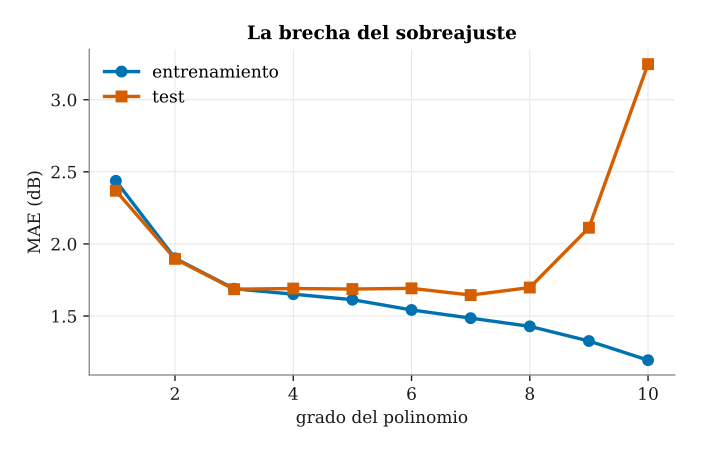
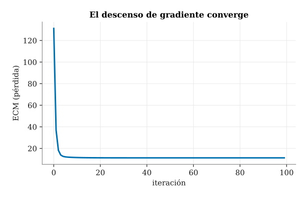
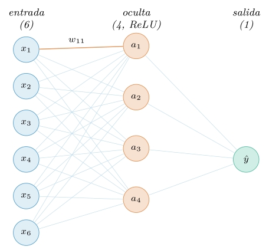
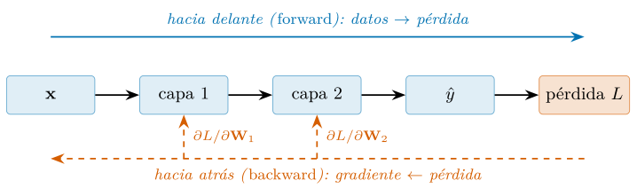
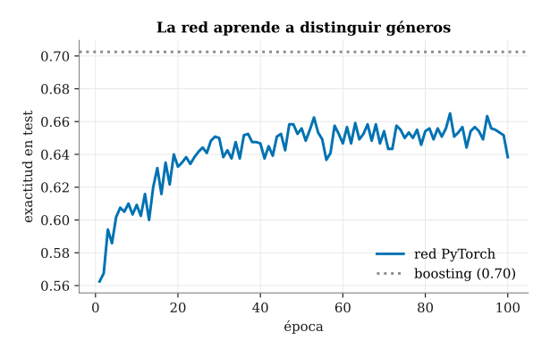
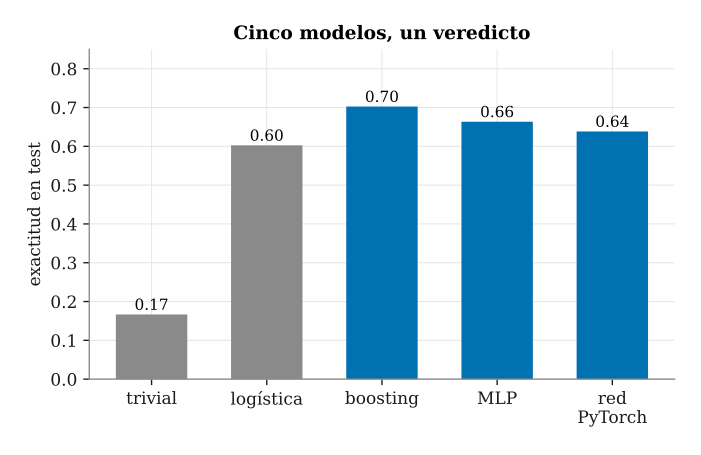

Capítulo 13. Fundamentos del aprendizaje automático
▶ Ejecutar este capítulo en Binder
La primera vez que se abre, Binder construye el entorno en la nube (unos 10-20 min); verás una pantalla de progreso. Después queda en caché y abre en segundos. Si parece que no responde, espera a que termine de construirse o vuelve a intentarlo.
El aprendizaje automático suena a magia y se vende como tal, pero su base es sencilla y conviene entenderla desde los cimientos antes de tocar una biblioteca. Todo se reduce a una idea: ajustar una función a unos datos de modo que generalice a datos nuevos. Lo demás —la regresión, los árboles de decisión, las redes neuronales— son formas distintas de esa misma idea, con compromisos distintos entre lo que un modelo puede aprender y lo que de verdad aprende. Por eso este capítulo construye el concepto desde cero, con código propio, antes de delegar en scikit-learn: quien entiende la mecánica no se deja deslumbrar por la etiqueta.
El cap. 12 se cerró con una consigna: una vez vistos y entendidos los datos, toca que predigan. Este capítulo la recoge y abre la Parte V, la del modelado y la responsabilidad. La predicción no es la inferencia del cap. 11 —no buscamos explicar un mecanismo ni cuantificar una incertidumbre poblacional, sino acertar en un caso concreto que aún no hemos visto—, pero hereda de ella su exigencia central: la honestidad. Un modelo que se juzga con los datos que usó para aprender miente sobre sí mismo con la misma facilidad con que un eje truncado miente sobre una diferencia.
El plan es este. Primero formalizamos el aprendizaje supervisado y la partición honesta que lo hace posible (§13.1). Luego construimos la regresión lineal desde cero, con la ecuación normal, y la reconocemos en scikit-learn (§13.2); pasamos a la clasificación y a las métricas que no se dejan engañar por el desbalance (§13.3); y diagnosticamos el enemigo de todo modelo, el sobreajuste (§13.4). Bajamos entonces al motor que entrena casi todo lo moderno, el descenso de gradiente (§13.5), y con él montamos una red neuronal a mano (§13.6) antes de rehacerla, ya en serio, con PyTorch (§13.7). Levantamos la vista al estado del arte de 2026, donde los árboles todavía disputan el trono a la red profunda en datos tabulares (§13.8), y cerramos con un caso integrador sobre la música (§13.9). Delegar en scikit-learn a escala, con validación y ajuste sistemáticos, llegará en el cap. 14; aquí importa la mecánica. Para el lector que quiera un compañero práctico y extenso, Géron (2022) recorre el mismo terreno con más recetas.
La formulación del aprendizaje supervisado
En el aprendizaje supervisado (supervised learning) partimos de ejemplos etiquetados: cada observación trae unas variables de entrada y una respuesta conocida, y queremos aprender a predecir la segunda a partir de las primeras. Puesto en símbolos, los datos son una matriz de características (features) \(\mathbf{X}\) de forma \((n, d)\) —\(n\) observaciones en las filas, \(d\) variables en las columnas— y un vector de respuestas \(\mathbf{y}\) de longitud \(n\). El objetivo es hallar una función \(f\) tal que \(f(\mathbf{x}) \approx y\); no en los ejemplos que ya tenemos —eso, como veremos, es trivial— sino en ejemplos nuevos. La distinción entre ambas cosas es todo el capítulo.
Según cómo sea la respuesta, el problema recibe un nombre. Si \(y\) es un número continuo, hablamos de regresión: predecir el volumen de una pista, un valor en decibelios. Si \(y\) es una categoría, de clasificación: decidir a qué género pertenece esa pista. Los dos problemas comparten el mismo esqueleto —datos, función, medida del error— y este capítulo los trata casi en paralelo, porque casi todo lo que se aprende en uno vale en el otro. El tratamiento moderno, asequible y con código en Python es James et al. (2023); a él remitimos a quien quiera la teoría estadística completa detrás de cada modelo.
La generalización y la partición
La idea que distingue el modelado de la mera descripción es la generalización (generalization): no queremos un modelo que reproduzca sin fallo los datos que ya tenemos —para eso basta guardarlos en una tabla y buscar— sino uno que acierte en los que no ha visto. Un modelo que memoriza el pasado y fracasa con el futuro no ha aprendido nada; solo lo ha copiado. Medir el acierto sobre los mismos datos con los que se entrenó, por tanto, no mide nada útil: mide la memoria, no el aprendizaje.
De ahí que, desde el primer minuto, los datos se partan en dos. Una parte, el conjunto de entrenamiento (train), es la única que el modelo llega a ver: con ella ajusta sus parámetros. La otra, el conjunto de prueba o test, se aparta y no se toca hasta el final; simula «el futuro», los datos que todavía no existen, y solo sirve para juzgar. Esta partición es la que el cap. 10 anunció al hablar de la fuga de datos (§10.6.2): mirar el test mientras se entrena —elegir un modelo, un umbral o un parámetro fijándose en él— es la forma más común de fuga, y también la más silenciosa, porque infla el resultado sin que salte ningún error. La regla es tajante y sencilla de respetar: el test no se mira hasta que ya no hay nada que decidir.
En scikit-learn la partición es una línea. La hacemos sobre el conjunto de este capítulo, un puñado equilibrado de seis géneros que describimos enseguida (§13.1.2):
import pandas as pd
from sklearn.model_selection import train_test_split
musica = pd.read_parquet("data/processed/musica.parquet")
generos = ["pop", "rock", "classical",
"hip-hop", "jazz", "reggaeton"]
sub = pd.concat([musica[musica.track_genre == g]
.sample(1000, random_state=2026)
for g in generos]) # 1000 por genero
feats = ["danceability", "energy", "loudness",
"speechiness", "acousticness", "instrumentalness",
"liveness", "valence", "tempo", "duration_ms"]
X = sub[feats].to_numpy(float) # matriz (n, d): 10 rasgos
y = sub["track_genre"].to_numpy() # respuesta categorica
X_tr, X_te, y_tr, y_te = train_test_split(
X, y, test_size=0.2, random_state=2026, stratify=y)
# el modelo aprende SOLO con (X_tr, y_tr); (X_te, y_te) es el
# "futuro" y no se toca hasta evaluar.
print(X_tr.shape, X_te.shape)
# (4800, 10) (1200, 10)Reservamos el 20 % para el test, 1 200 pistas, y entrenamos con las 4 800 restantes. Estratificar por género (stratify=y) asegura que cada uno conserve su proporción a ambos lados; la semilla fija (random_state=2026) hace la partición reproducible: cualquiera que ejecute el listado obtiene exactamente el mismo reparto, condición de que los números de este capítulo cuadren en la máquina del lector. La figura 13.1 resume el trato: el modelo aprende solo en la parte de entrenamiento y se evalúa una sola vez en la de test.

El dataset del capítulo: la música con señal real
Conviene una aclaración honesta, en la línea de la política de datos del cap. 10 (§10.7). La música nos ha acompañado desde el cap. 5, y para el aprendizaje automático tiene una virtud que muchos conjuntos de juguete no tienen: señal real, que no hace falta fabricar. Cada género deja una huella acústica —la clásica raya en lo puramente acústico, el hip-hop va cargado de voz— y los rasgos de audio se relacionan entre sí, de modo que hay una estructura genuina que un modelo puede aprender, no un ruido plano donde solo cabría sobreajustar.
Ahora bien, tener señal no significa que cualquier pregunta tenga respuesta. Elegir el objetivo es parte del oficio, y aquí escogemos dos que el sonido sí determina. El primero es un rasgo continuo, el volumen (loudness, en decibelios), que predeciremos desde otros rasgos de audio: es nuestra regresión (§13.2). El segundo es el track_genre, que adivinaremos por el sonido: es nuestra clasificación (§13.3), la que da nombre a la parte. Para que las clases queden equilibradas trabajamos sobre un puñado de seis géneros —pop, rock, clásica, hip-hop, jazz y reguetón—, con mil pistas de cada uno. La copia congelada del catálogo (maharshipandya 2022) está en musica.parquet; el subconjunto lo arma src/cap13_ml.py.
La señal se ve sin necesidad de modelo alguno, con las mismas herramientas de pandas del cap. 5:
import pandas as pd
musica = pd.read_parquet("data/processed/musica.parquet")
generos = ["pop", "rock", "classical",
"hip-hop", "jazz", "reggaeton"]
sub = pd.concat([musica[musica.track_genre == g]
.sample(1000, random_state=2026)
for g in generos])
print(sub.shape) # (6000, 20)
# la señal se ve sin modelo alguno:
print(round(sub["loudness"].corr(sub["energy"]), 2))
huella = sub.groupby("track_genre")[
["acousticness", "speechiness"]].mean()
print(round(huella.loc["classical", "acousticness"], 2))
print(round(huella.loc["hip-hop", "speechiness"], 2))
# 0.85
# 0.92
# 0.13El subconjunto trae 6 000 pistas y las veinte columnas del catálogo; de ellas usaremos diez rasgos de audio como características. Los números confirman la estructura antes de ajustar nada: el volumen y la energía van de la mano (correlación \(0{,}85\): una pista enérgica es una pista alta), y cada género tiene su firma —la música clásica raya en lo puramente acústico (\(0{,}92\) de acousticness) y es de las más silenciosas (\(-20\) dB de media), mientras que el hip-hop es el más hablado (\(0{,}13\) de speechiness)—. Esa es la estructura que un buen modelo debe capturar y que uno malo —o uno evaluado con trampa— fingirá capturar. Con los datos partidos y la señal a la vista, ya podemos ajustar el primer modelo.
Regresión lineal: desde cero y con scikit-learn
El capítulo anterior se cerró con una promesa: con los datos ya vistos y entendidos, tocaba que predijeran. Y en el §13.1.1 fijamos la regla del juego honesto: ajustar el modelo solo con el conjunto de entrenamiento y reservar el de test como si fuera el futuro. Con esas dos piezas ya podemos construir nuestro primer modelo. Empezamos por el más sencillo y, a la vez, el más instructivo: la regresión lineal.
El modelo lineal predice el objetivo como una combinación lineal de las características (features) de cada observación: \[\hat{y} = \mathbf{x}^\top\mathbf{\beta} + b,\] donde \(\mathbf{x}\in\mathbb{R}^{p}\) reúne las \(p\) características de una observación, \(\mathbf{\beta}\in\mathbb{R}^{p}\) es el vector de coeficientes (uno por característica) y \(b\) es el término independiente. Aprender el modelo consiste en encontrar el \(\mathbf{\beta}\) y el \(b\) que minimizan el error cuadrático medio (ECM) sobre el conjunto de entrenamiento, \[\mathrm{ECM}(\mathbf{\beta}, b)
= \frac{1}{n}\sum_{i=1}^{n}\bigl(y_i - \hat{y}_i\bigr)^2,\] es decir, el promedio de los cuadrados de los residuos \(y_i-\hat{y}_i\). No hay magia: «entrenar» una regresión lineal es resolver un problema de optimización con solución conocida, y eso es justo lo que haremos a mano antes de delegarlo en scikit-learn.
Como objetivo tomamos el volumen de una pista (loudness, en decibelios) y lo predecimos a partir de cuatro rasgos de audio —la energía, la acústica, la bailabilidad y la valencia (positividad)—, del mismo catálogo de música (§13.1.2).
La ecuación normal
Minimizar el ECM tiene una gracia notable: al ser una función cuadrática y convexa de \(\mathbf{\beta}\), su mínimo se obtiene igualando el gradiente a cero, y conduce a un sistema lineal con solución cerrada, la ecuación normal. Si apilamos las observaciones de entrenamiento por filas en la matriz \(\mathbf{X}\) (con una columna de unos para absorber el término independiente) y los objetivos en el vector \(\mathbf{y}\), el \(\mathbf{\beta}\) óptimo cumple \[(\mathbf{X}^\top\mathbf{X})\,\mathbf{\beta} = \mathbf{X}^\top\mathbf{y}.\]
Aquí recogemos el hilo del capítulo 7: en el §7.5 presentamos el álgebra lineal con NumPy y en el §7.5.1 el producto matricial que ahora reaparece como \(\mathbf{X}^\top\mathbf{X}\). Resolver el sistema no requiere invertir la matriz explícitamente: np.linalg.solve lo hace de forma más estable y eficiente (Harris et al. 2020). El listado siguiente construye \(\mathbf{X}\), \(\mathbf{y}\) y la partición, y define las dos funciones que resumen el modelo: ajustar_lineal (aprende \(\mathbf{\beta}\)) y predecir_lineal (aplica el modelo).
import numpy as np
import pandas as pd
from sklearn.model_selection import train_test_split
sub = pd.read_parquet("data/processed/musica.parquet")
generos = ["pop", "rock", "classical",
"hip-hop", "jazz", "reggaeton"]
sub = pd.concat([sub[sub.track_genre == g]
.sample(1000, random_state=2026)
for g in generos])
feats = ["energy", "acousticness", "danceability", "valence"]
X = sub[feats].to_numpy(float) # (6000, 4)
y = sub["loudness"].to_numpy(float) # objetivo: volumen en dB
X_tr, X_te, y_tr, y_te = train_test_split(
X, y, test_size=0.2, random_state=2026,
stratify=sub["track_genre"])
def ajustar_lineal(X, y):
# anade una columna de unos para el termino independiente b
Xb = np.c_[np.ones(len(X)), X]
# resuelve (Xb^T Xb) beta = Xb^T y : la ecuacion normal
return np.linalg.solve(Xb.T @ Xb, Xb.T @ y)
def predecir_lineal(X, beta):
return np.c_[np.ones(len(X)), X] @ beta
beta = ajustar_lineal(X_tr, y_tr)
print("X_tr:", X_tr.shape, " X_te:", X_te.shape)
print("b =", round(float(beta[0]), 2))
print("coef =", [round(float(v), 2) for v in beta[1:]])
# X_tr: (4800, 4) X_te: (1200, 4)
# b = -22.59
# coef = [19.41, -0.26, 6.22, -1.72]En una veintena de líneas hemos entrenado un modelo de verdad: la partición deja \(4\,800\) observaciones para aprender y \(1\,200\) para evaluar, y np.linalg.solve devuelve el vector de cinco números (el término independiente más cuatro coeficientes) que mejor ajusta el volumen en el sentido del ECM. Estos cinco números son el modelo: predecir consiste, sin más, en un producto escalar y una suma.
Con scikit-learn
Escribir la ecuación normal a mano es didáctico, pero en la práctica no reinventaremos la rueda. La biblioteca scikit-learn (Pedregosa et al. 2011) ofrece la regresión lineal ya resuelta tras una interfaz que reconoceremos de inmediato: la pareja fit/predict. Aquí se cumple una promesa del capítulo 6, donde vimos la programación orientada a objetos: todos los modelos de scikit-learn comparten esa misma interfaz —fit(X, y) para aprender y predict(X) para predecir— de modo que cambiar de modelo no obliga a tocar el resto del código (Buitinck et al. 2013). Es la misma idea del polimorfismo, llevada al modelado.
from sklearn.linear_model import LinearRegression
from sklearn.metrics import mean_absolute_error, r2_score
modelo = LinearRegression().fit(X_tr, y_tr)
# los coeficientes coinciden con los de la ecuacion normal
coef_iguales = (np.allclose(modelo.coef_, beta[1:])
and np.allclose(modelo.intercept_, beta[0]))
print("mismos coeficientes:", coef_iguales)
pred_tr = modelo.predict(X_tr)
pred_te = modelo.predict(X_te)
print("MAE entrenamiento:",
round(mean_absolute_error(y_tr, pred_tr), 2))
print("MAE test:", round(mean_absolute_error(y_te, pred_te), 2))
print("R2 test:", round(r2_score(y_te, pred_te), 3))
# mismos coeficientes: True
# MAE entrenamiento: 2.44
# MAE test: 2.37
# R2 test: 0.751La primera línea de salida es la comprobación que buscábamos: np.allclose devuelve True, es decir, nuestra ecuación normal y LinearRegression llegan a los mismos coeficientes. No es casualidad: ambos resuelven el mismo problema de mínimos cuadrados; scikit-learn añade robustez numérica y un sinfín de comodidades, pero la matemática es la que escribimos a mano.
Las tres cifras siguientes son nuestra primera evaluación honesta. El error absoluto medio (MAE, mean absolute error) vale \(2{,}44\) dB en entrenamiento y \(2{,}37\) dB en test: casi idénticos —y el de test, si acaso, un pelo menor—, señal de que este modelo no memoriza (no hay sobreajuste, un riesgo que estudiaremos en el §13.4). El coeficiente de determinación \(R^2\) vale \(0{,}751\) en test, esto es, el modelo explica en torno al \(75{,}1\) % de la varianza del volumen. Para un modelo tan simple no está nada mal como punto de partida.
Interpretabilidad
Si empezamos por la regresión lineal no es porque sea el mejor modelo —no lo será—, sino porque es interpretable. Cada coeficiente tiene una lectura directa: cuánto cambia la predicción del volumen por cada unidad que aumenta una característica, con las demás fijas. Basta imprimirlos junto a su nombre.
for nombre, c in zip(feats, modelo.coef_):
print(f"{nombre:14s} {c:+.2f}")
# energy +19.41
# acousticness -0.26
# danceability +6.22
# valence -1.72La lectura es transparente y musicalmente sensata. La energía sube el volumen con fuerza (unos \(+19\) dB por unidad de energy, que va de 0 a 1): una pista enérgica es una pista alta, casi por definición. La bailabilidad también lo sube (\(+6{,}2\)), y la valencia —lo alegre de la pista— apenas influye (\(-1{,}7\)). Llama la atención la acústica: su coeficiente sale casi nulo (\(-0{,}26\)), pese a que acousticness por sí sola anticorrelaciona fuerte con el volumen. No es un error: la energía y la acústica van tan de la mano que, una vez la energía está en el modelo, la acústica ya no aporta nada nuevo. Es la multicolinealidad del cap. 11, y reaparecerá al regularizar (§13.4.3). Que los signos cuadren con lo que sabemos de la música —más energía, más volumen— es, en sí mismo, una validación del método.
Conviene detenerse en la diferencia entre las dos métricas de error que hemos usado de pasada. El ECM (o MSE, mean squared error), que la ecuación normal minimiza, eleva los residuos al cuadrado: es diferenciable —de ahí su solución cerrada— pero penaliza con dureza los errores grandes, y lo hace sensible a los valores atípicos. El MAE, en cambio, promedia los errores en valor absoluto: es más robusto y se expresa en las mismas unidades que el objetivo (dB), y lo vuelve fácil de interpretar. Por eso ajustamos con el ECM pero informamos del MAE: cada métrica sirve a un propósito distinto.
La regresión lineal nos deja, sobre todo, una referencia. Su MAE de \(2{,}4\) dB es la vara con la que mediremos si un modelo más complejo merece la pena: solo lo adoptaremos si mejora esta cifra de forma clara, y siempre en test, no en entrenamiento. Con esa vara en la mano abordaremos a continuación un problema distinto —la clasificación (§13.3)— y, más adelante, modelos capaces de capturar relaciones no lineales, cuando estudiemos el sobreajuste en el §13.4. La interpretabilidad y la sencillez de la regresión lineal explican que, décadas después, siga siendo el primer modelo que se prueba y el estándar contra el que se comparan los demás (James et al. 2023).
Clasificación: predecir etiquetas y medir bien
En el apartado anterior la respuesta era un número —el volumen de una pista— y la regresión lo predecía sobre un hiperplano. Muchas preguntas, sin embargo, no piden un número sino una etiqueta: ¿es este correo spam?, ¿pertenece esta lesión a la clase benigna o a la maligna?, ¿de qué género es esta canción? Cuando la variable a predecir es una categoría y no una cantidad hablamos de clasificación (classification), la otra gran familia del aprendizaje supervisado. Las características \(\mathbf{X}\) son ahora diez rasgos de audio; lo que cambia es que \(y\) ya no vive en la recta real, sino en un conjunto finito de clases.
Trabajaremos la pregunta que da nombre a la parte: ¿a qué género pertenece una pista, solo por su sonido? Sobre los seis géneros del puñado —pop, rock, clásica, hip-hop, jazz y reguetón—, la etiqueta \(y\) toma uno de seis valores, todos igual de frecuentes (mil pistas cada uno). No hay, pues, una clase rara; pero sí géneros con firma nítida y géneros que se confunden entre sí, y esa disparidad —que un único porcentaje de acierto esconde— será la protagonista de la sección. Recordemos, además, la distinción del capítulo 11: aquí no inferimos nada sobre un mecanismo, predecimos una etiqueta para pistas que el modelo no ha visto; el conjunto de test hace de «futuro» y es el único juez honesto.
La regresión logística
La tentación inmediata es reutilizar la regresión lineal: ajustar un número a cada clase y quedarnos con el mayor. No funciona bien, porque esos números no están acotados —pueden ser negativos o enormes— y no se leen como probabilidades. La regresión logística (logistic regression) resuelve el problema con un gesto elegante: calcula una combinación lineal \(z_k=\mathbf{\beta}_k^{\top}\mathbf{x}\) por cada clase \(k\) y las pasa por la función softmax, que las convierte en probabilidades que suman uno: \[P(y=k\mid\mathbf{x}) = \frac{e^{z_k}}{\sum_j e^{z_j}}.\] La etiqueta predicha es la clase de mayor probabilidad. Con solo dos clases la softmax se reduce a la sigmoide \(\sigma(z)=1/(1+e^{-z})\), la versión binaria del mismo modelo. Pese al nombre, la regresión logística es un clasificador; la palabra «regresión» delata su parentesco con el modelo lineal, del que hereda la interpretabilidad de los coeficientes.
En scikit-learn (Pedregosa et al. 2011) el modelo vive en LogisticRegression y respeta la misma interfaz fit/predict que ya conocemos. Una particularidad merece un comentario: su optimizador es iterativo y se detiene al cabo de max_iter pasos, cuyo valor por defecto es 100; si el ajuste no ha convergido para entonces, scikit-learn avisa con un ConvergenceWarning y devuelve una solución a medio cocer. Por eso es prudente darle holgura y subirlo a 1000: aquí el optimizador converge de sobra dentro de ese margen.
import pandas as pd
from sklearn.model_selection import train_test_split
from sklearn.linear_model import LogisticRegression
from sklearn.preprocessing import StandardScaler
feats = ["danceability", "energy", "loudness",
"speechiness", "acousticness", "instrumentalness",
"liveness", "valence", "tempo", "duration_ms"]
X = sub[feats].to_numpy(float) # sub: el puñado (§13.1)
y = sub["track_genre"].to_numpy()
X_tr, X_te, y_tr, y_te = train_test_split(
X, y, test_size=0.2, random_state=2026, stratify=y)
esc = StandardScaler().fit(X_tr) # la logistica pide escala
X_tr, X_te = esc.transform(X_tr), esc.transform(X_te)
# max_iter=1000: el default (100) a veces se queda corto
clf = LogisticRegression(max_iter=1000).fit(X_tr, y_tr)
print(clf.predict(X_te[:1])) # ['pop'] (real: hip-hop)
pred = clf.predict(X_te) # una etiqueta por pistaLa primera pista de test es, en realidad, de hip-hop, pero el modelo la etiqueta como pop: al mirar las probabilidades (predict_proba) reparte \(0{,}32\) a pop, \(0{,}28\) a reguetón y \(0{,}26\) a hip-hop —un casi empate entre los géneros urbanos, que comparten ritmo y producción—. El acierto no estaba garantizado, y este fallo temprano ya anticipa dónde el modelo sufrirá. Tenemos un clasificador entrenado; falta lo verdaderamente delicado, que es juzgar si acierta.
Por qué la exactitud no basta
La medida más intuitiva del acierto es la exactitud (accuracy): la fracción de pistas clasificadas correctamente. Es un número cómodo, un único porcentaje. Pongámoslo primero en contexto, comparándolo con el clasificador más tonto imaginable: uno que ignora el sonido y responde siempre el mismo género.
import numpy as np
from collections import Counter
from sklearn.metrics import accuracy_score
comun = Counter(y_tr).most_common(1)[0][0] # ignora el sonido
trivial = np.full_like(y_te, comun) # siempre un genero
print(accuracy_score(y_te, trivial)) # 0.167
print(accuracy_score(y_te, pred)) # 0.603El clasificador trivial acierta el \(16,7\) % de las pistas —la proporción exacta de cada género, porque siempre apuesta por el mismo— y no sabe nada del sonido. Nuestra logística saca \(0,603\): más de tres veces y media por encima de ese azar, prueba de que el sonido sí predice el género y de que el modelo lo ha aprendido. Pero ese único número esconde algo. Un \(0,60\) de media no dice si el modelo acierta por igual en los seis géneros o si brilla en unos y naufraga en otros; y aquí, como veremos, ocurre lo segundo: clava la música clásica y apenas distingue el pop. La lección es clara: la exactitud, a solas, no basta; para saber si un clasificador sirve hay que mirar los tipos de error que comete, y en qué clase los comete, no solo cuántos.
La matriz de confusión y sus métricas
La herramienta que desglosa los tipos de error es la matriz de confusión: una tabla que cruza la etiqueta real (filas) con la predicha (columnas). Con seis géneros es una cuadrícula de \(6\times 6\): la diagonal recoge los aciertos y cada casilla de fuera cuenta un tipo concreto de confusión —cuántos temas de reguetón se etiquetaron como hip-hop, por ejemplo—. De ella salen, clase por clase, las métricas que importan. Las tres que usaremos, calculadas para un género frente a todos los demás, son:
La precisión (precision): de las pistas que predije de un género, ¿cuántas lo eran de verdad? Penaliza los falsos positivos (colar en «rock» temas que no lo son).
La sensibilidad (recall): de las pistas que realmente eran de ese género, ¿cuántas reconocí? Penaliza los falsos negativos (los temas del género que se me escapan).
La F1: la media armónica de las dos anteriores, un resumen que solo es alto cuando ambas lo son.
\[\text{precisión}=\frac{VP}{VP+FP},\quad \text{sensibilidad}=\frac{VP}{VP+FN},\quad F_1=\frac{2\cdot\text{precisión}\cdot\text{sensibilidad}} {\text{precisión}+\text{sensibilidad}}.\]
scikit-learn calcula la matriz con confusion_matrix y resume las tres métricas, clase por clase, en un classification_report listo para leer.
from sklearn.metrics import (confusion_matrix,
classification_report)
print(confusion_matrix(y_te, pred)) # orden alfabetico
# [[167 0 23 6 0 4]
# [ 0 79 10 25 70 16]
# [ 13 7 151 13 5 11]
# [ 1 27 22 64 42 44]
# [ 0 52 0 15 126 7]
# [ 0 6 21 24 13 136]]
print(classification_report(y_te, pred, digits=2))
# precision recall f1-score support
# classical 0.92 0.83 0.88 200
# hip-hop 0.46 0.40 0.43 200
# jazz 0.67 0.76 0.71 200
# pop 0.44 0.32 0.37 200
# reggaeton 0.49 0.63 0.55 200
# rock 0.62 0.68 0.65 200
# accuracy 0.60 1200
# macro avg 0.60 0.60 0.60 1200Léase la matriz por filas (la realidad) y por columnas (la predicción). La diagonal manda: de las 200 pistas de clásica, 167 se reconocen; de las de jazz, 151; de rock, 136. Pero fuera de la diagonal se ve dónde falla. La fila del pop es la más repartida: de sus 200 temas, solo 64 se etiquetan como pop, y el resto se dispersa —44 a rock, 42 a reguetón, 27 a hip-hop—; el pop, género camaleónico, se confunde con casi todo. El hip-hop y el reguetón se intercambian sin cesar (70 temas de hip-hop predichos como reguetón). Las métricas lo resumen clase por clase: la clásica saca una precisión de \(0,92\) y una sensibilidad de \(0,83\) (F1 \(0,88\)), mientras que el pop se hunde a \(0,44\) y \(0,32\) (F1 \(0,37\)). La exactitud media, ese \(0,60\), promediaba justo esos dos extremos.

src/cap13_ml.py.La figura 13.2 dibuja esa misma matriz: la diagonal concentra el color oscuro —los aciertos— y los bloques templados de fuera señalan las confusiones sistemáticas, sobre todo el triángulo que enreda pop, hip-hop y reguetón, los tres géneros de raíz urbana que comparten ritmo y producción.
¿Cuál de las tres métricas nos debe importar? La respuesta no la da el algoritmo, la da el problema. Si etiquetáramos una biblioteca para un recomendador, una falsa alarma —colar un tema de pop en la lista de rock— molesta al oyente, así que primaríamos la precisión; si quisiéramos rescatar todo el reguetón de un archivo sin catalogar, primaríamos la sensibilidad, aun a costa de alguna intrusa. El caso extremo vive fuera de la música: en el cribado médico, no detectar una enfermedad presente (un falso negativo) puede costar una vida, mientras que una falsa alarma se corrige con una segunda prueba, y por eso allí se prioriza la sensibilidad casi a cualquier precio. Es la misma tensión entre los dos tipos de error del contraste de hipótesis del capítulo 11 (véase §11.6), ahora del lado de la predicción. La métrica que elegimos encarna qué error estamos dispuestos a tolerar.
Con esto cerramos el retrato de un clasificador: entrenarlo es la parte fácil; evaluarlo con la métrica correcta, y no dejarse deslumbrar por una exactitud media, es lo que separa un modelo que sirve de uno que solo lo aparenta (Géron 2022; James et al. 2023).
Sobreajuste, sesgo, varianza y validación
Hasta aquí hemos entrenado modelos, los hemos evaluado sobre datos que apartamos y hemos leído sus métricas. Falta el concepto que gobierna todo lo demás, el que separa a quien entiende el aprendizaje automático de quien solo llama a .fit(). La cuestión es sencilla de enunciar y difícil de interiorizar: un modelo puede fallar de dos maneras opuestas, y las herramientas para diagnosticar cada una son distintas. Esta sección es el corazón de la Parte V; lo que aprendamos aquí vale para la regresión lineal, para el vecindario más cercano y para las redes profundas del final del capítulo por igual.
Subajuste y sobreajuste
Los dos fallos opuestos tienen nombre. Por un lado, el subajuste (underfitting): el modelo es demasiado simple para capturar el patrón de los datos, así que se equivoca tanto en entrenamiento como en test. Se dice que tiene mucho sesgo (bias): sus suposiciones son tan rígidas que ni siquiera aprende lo que hay. Una recta que intenta seguir una curva subajusta por mucho que la ajustemos.
Por el otro, el sobreajuste (overfitting): el modelo es tan flexible que, en vez de aprender el patrón general, memoriza el ruido particular del conjunto de entrenamiento —sus fluctuaciones accidentales, las que no se repetirán—. Acierta casi a la perfección en los datos que ha visto y falla en los que no. Se dice que tiene mucha varianza (variance): su respuesta cambia demasiado con la muestra concreta que le toque. Un polinomio de grado alto que pasa exactamente por cada punto de entrenamiento sobreajusta de manual.
Entre ambos extremos hay una tensión que no se puede burlar: el compromiso sesgo-varianza (bias-variance tradeoff). Al subir la complejidad del modelo, el sesgo baja —captura más estructura— pero la varianza sube —se vuelve más sensible al ruido—. Formalmente, el error cuadrático esperado de una predicción se descompone en tres sumandos (Hastie et al. 2009): \[\mathbb{E}\!\left[(\hat{y}-y)^2\right] = \underbrace{\big(\mathbb{E}[\hat{y}]-f\big)^2}_{\text{sesgo}^2} + \underbrace{\Var(\hat{y})}_{\text{varianza}} + \sigma^2_{\text{irred}} ,\] donde \(f\) es la relación verdadera y \(\sigma^2_{\text{irred}}\) el ruido irreducible, el que ningún modelo puede eliminar porque no está en las características. Bajar el sesgo a costa de subir la varianza, o al revés, mueve el peso entre los dos primeros términos; el tercero es un suelo.
De aquí sale la moraleja que más cuesta asumir: el óptimo no es el mínimo error de entrenamiento. Ese error casi siempre mejora al añadir complejidad —en el límite, un modelo con parámetros de sobra memoriza el entrenamiento entero y su error baja a cero—, pero eso no dice nada sobre datos nuevos. Lo que queremos minimizar es el error de test, el que estima el rendimiento futuro (§10.6.2 del cap. 10 ya nos hizo apartar ese conjunto y no mirarlo). Y la señal inequívoca del sobreajuste es la brecha: un modelo que va muy bien en entrenamiento y mal en test está memorizando, no aprendiendo.
Ver la brecha
Nada convence tanto como verla aparecer. Vamos a fabricar deliberadamente modelos de complejidad creciente sobre la misma regresión del volumen y observar qué le pasa a cada error. La palanca de complejidad será el grado de un polinomio: con PolynomialFeatures de scikit-learn generamos, a partir de las cuatro características originales, todos sus productos hasta un grado dado —más grado, más términos, modelo más flexible—. Partimos del mismo reparto de entrenamiento y test de la §13.2:
import pandas as pd
from sklearn.model_selection import train_test_split
sub = pd.read_parquet("data/processed/musica.parquet")
generos = ["pop", "rock", "classical",
"hip-hop", "jazz", "reggaeton"]
sub = pd.concat([sub[sub.track_genre == g]
.sample(1000, random_state=2026)
for g in generos])
feats = ["energy", "acousticness", "danceability", "valence"]
X = sub[feats].to_numpy(float)
y = sub["loudness"].to_numpy(float)
X_tr, X_te, y_tr, y_te = train_test_split(
X, y, test_size=0.2, random_state=2026,
stratify=sub["track_genre"])Ahora ajustamos un polinomio de cada grado y comparamos su error medio absoluto (MAE) en entrenamiento y en test. El pipeline encadena la expansión polinómica y la regresión lineal en un solo objeto:
from sklearn.preprocessing import PolynomialFeatures
from sklearn.pipeline import make_pipeline
from sklearn.linear_model import LinearRegression
from sklearn.metrics import mean_absolute_error as mae
for g in (1, 3, 5, 9):
modelo = make_pipeline(PolynomialFeatures(g),
LinearRegression()).fit(X_tr, y_tr)
e_tr = mae(y_tr, modelo.predict(X_tr))
e_te = mae(y_te, modelo.predict(X_te))
print(f"grado {g}: train {e_tr:.2f} test {e_te:.2f}")
# grado 1: train 2.44 test 2.37
# grado 3: train 1.69 test 1.69
# grado 5: train 1.61 test 1.69
# grado 9: train 1.33 test 2.11Léase la tabla de izquierda a derecha. En el grado 1 (la regresión lineal de siempre) ambos errores son casi iguales, 2,44 y 2,37: el modelo es simple y trata igual a lo visto y a lo nuevo; si acaso, subajusta un poco. Al subir a los grados 3 y 5 los dos errores bajan —el modelo captura curvatura real de la señal— y el de test toca fondo, 1,69: esto es aprendizaje del bueno. Pero en el grado 9 algo se rompe: el error de entrenamiento sigue bajando (1,33, el mejor de todos), mientras el de test da la vuelta y sube a 2,11. El modelo ha empezado a memorizar ruido. Esa distancia que se abre entre 1,33 y 2,11 es la brecha, y es la huella dactilar del sobreajuste.
La figura 13.3 recorre todos los grados de 1 a 10 y muestra el fenómeno en su forma canónica —el gráfico que aparece, con una u otra ropa, en todo curso de aprendizaje automático—. El error de entrenamiento baja de manera monótona: cuanta más complejidad, mejor se ajusta a lo que ya ha visto, sin excepción. El error de test, en cambio, dibuja una U: primero baja, alcanza su mínimo alrededor del grado 7 —el punto dulce, donde el modelo es tan complejo como la señal lo pide y no más— y después se dispara, hasta 3,25 en el grado 10. El óptimo no está donde el entrenamiento toca fondo, sino en el valle de esa U. A su izquierda dominamos el sesgo (subajuste); a su derecha, la varianza (sobreajuste). Elegir la complejidad es, ni más ni menos, encontrar ese valle.

src/cap13_ml.py.Controlar el compromiso
Sabemos diagnosticar la brecha; ¿cómo la controlamos? La primera familia de herramientas es la regularización (regularization): en lugar de dejar que el modelo persiga el mínimo error de entrenamiento a cualquier precio, añadimos a su objetivo una penalización por complejidad, de modo que solo compense subir un coeficiente si mejora el ajuste lo suficiente. Dos variantes son omnipresentes. La regresión Ridge penaliza la suma de los cuadrados de los coeficientes (norma L2) y los encoge hacia cero sin anularlos. El Lasso penaliza la suma de sus valores absolutos (norma L1) y tiene una propiedad valiosa: lleva algunos coeficientes exactamente a cero, con lo que además hace selección de variables, descartando las características que no aportan (James et al. 2023).
from sklearn.linear_model import Ridge, Lasso
from sklearn.preprocessing import StandardScaler
ridge = Ridge(alpha=10.0).fit(X_tr, y_tr)
print(f"Ridge: test {mae(y_te, ridge.predict(X_te)):.2f}")
lasso = make_pipeline(StandardScaler(),
Lasso(alpha=0.8)).fit(X_tr, y_tr)
print(f"Lasso: test {mae(y_te, lasso.predict(X_te)):.2f}")
print("coef:", lasso.named_steps["lasso"].coef_.round(2))
# Ridge: test 2.33
# Lasso: test 2.33
# coef: [ 4.5 -0. 0.5 0. ]El parámetro alpha gradúa la fuerza de la penalización. Aquí, en un problema con señal fuerte y pocas características, la regularización no cambia el error de test —ronda 2,33, como la regresión desnuda: no había casi nada que sobreajustar—, pero el Lasso hace algo revelador. Sus coeficientes segundo y cuarto, los de acousticness y valence, salen a cero exactos: el método ha decidido, por sí solo, que esas dos variables no aportan y las ha eliminado, dejando energy y danceability. Y no es casual que caiga la acústica: ya vimos (§13.2.3) que la energía la absorbe por completo. En un problema con cientos de características —lo habitual— esa poda automática es oro: menos varianza y un modelo más legible. La regularización cobrará todo su sentido con los modelos flexibles del final del capítulo, donde sí hay complejidad de sobra que domar.
Conviene recordar que la regularización no es la única palanca contra la brecha (Géron 2022). Cuando un modelo sobreajusta caben tres remedios, y a menudo se combinan: simplificarlo (menos grado, menos parámetros), penalizarlo (Ridge, Lasso) o darle más datos. Este último merece un apunte, porque es el más olvidado y el más poderoso: la varianza de un modelo encoge al crecer la muestra —con más ejemplos, el ruido de unos se cancela con el de otros y cuesta más memorizarlo—, de modo que un modelo que sobreajusta con mil filas puede generalizar de sobra con cien mil. Ampliar los datos combate el sobreajuste; nunca el subajuste, que es cosa de un modelo demasiado pobre.
La segunda herramienta ataca un punto débil de nuestro método: un único reparto de entrenamiento y test da una estimación del error, y esa estimación depende de qué filas cayeron a cada lado. Con mala suerte, un reparto favorable nos engaña. La validación cruzada (cross-validation) lo resuelve promediando varios repartos. En su forma más común, la k-fold, partimos los datos en \(k\) pliegues iguales; entrenamos \(k\) veces, cada una usando \(k-1\) pliegues para entrenar y el restante para evaluar; y promediamos los \(k\) errores. El resultado es una estimación más estable, con su propia dispersión como medida de confianza. scikit-learn lo automatiza:
from sklearn.model_selection import cross_val_score, KFold
kf = KFold(n_splits=5, shuffle=True, random_state=2026)
puntos = cross_val_score(LinearRegression(), X, y, cv=kf,
scoring="neg_mean_absolute_error")
print("MAE por pliegue:", (-puntos).round(2))
print(f"media {-puntos.mean():.2f} desv {puntos.std():.2f}")
# MAE por pliegue: [2.49 2.34 2.42 2.47 2.41]
# media 2.43 desv 0.05Los cinco pliegues dan errores muy parecidos —entre 2,34 y 2,49, con media 2,43 y una desviación de apenas 0,05—, y nos dice que el 2,37 del reparto único no era un espejismo: el modelo lineal se comporta de forma consistente. Cuando la desviación entre pliegues es grande, en cambio, conviene desconfiar de cualquier cifra suelta. La validación cruzada es la base de la selección de modelos y del ajuste de hiperparámetros; la desarrollaremos a fondo en el cap. 14, cuando pongamos scikit-learn a trabajar a escala.
Y con esto llegamos al mensaje que resume la sección y, en el fondo, toda la Parte V: el objetivo no es acertar en los datos que tienes, sino en los que no tienes. El error de entrenamiento siempre se puede bajar; lo que cuenta es la generalización. Es el mismo salto de honestidad que el cap. 11 exigía a la inferencia —no confundir la muestra con la población—, ahora en clave de predicción: el test es nuestra mejor ventana al futuro, y todo el oficio consiste en no engañarnos a través de ella.
El descenso de gradiente: el motor del aprendizaje
La ecuación normal (§13.2.1) resolvió la regresión lineal de un tirón: una fórmula cerrada, heredada del álgebra lineal del cap. 7 (§7.5), que devuelve los coeficientes óptimos sin iterar. Es elegante, pero tiene dos límites que la vuelven insuficiente como método general. El primero es de coste: la fórmula pide resolver un sistema con la matriz \(\mathbf{X}^\top\mathbf{X}\), de tamaño \(p\times p\) para \(p\) características, y ese trabajo crece como el cubo de \(p\); con miles de características —nada raro en datos reales— se vuelve lento y numéricamente delicado. El segundo es de fondo, y es el que de verdad importa: la fórmula solo existe para la regresión lineal por mínimos cuadrados. En cuanto el modelo deja de ser lineal —una red neuronal, que veremos en la §13.6— no hay ninguna ecuación que despeje los parámetros, y hay que buscarlos de otra manera.
Esa otra manera es un método iterativo, general y sorprendentemente simple, que sirve para casi cualquier modelo con una pérdida derivable: el descenso de gradiente (gradient descent). Es el motor que entrena desde la regresión más humilde hasta las redes de miles de millones de parámetros; todo el aprendizaje profundo descansa sobre él. Esta sección lo presenta sobre un terreno conocido —la misma regresión del volumen— para que se vea que llega a la misma solución que la ecuación normal, y luego abre la puerta a lo que la ecuación normal no puede hacer.
La idea
Imaginemos que la pérdida \(L(\mathbf{\beta})\) —el error cuadrático medio de la §13.2.1, por ejemplo— es un paisaje: una superficie sobre el espacio de los coeficientes \(\mathbf{\beta}\), con valles donde el modelo acierta y cumbres donde falla. Entrenar es encontrar el fondo del valle. Ahora imaginemos que estamos en algún punto de ese paisaje, de noche y con niebla, sin ver el mapa entero: lo único que podemos palpar es la pendiente bajo nuestros pies. La estrategia sensata es clara: dar un paso en la dirección de máxima bajada y repetir. Eso es, literalmente, el descenso de gradiente.
El gradiente \(\nabla L\) es el vector de las derivadas parciales de la pérdida respecto a cada coeficiente, y apunta en la dirección de máximo ascenso. Para bajar, vamos en sentido contrario. La regla de actualización es toda la idea en una línea: \[\mathbf{\beta} \;\leftarrow\; \mathbf{\beta} - \eta\,\nabla L(\mathbf{\beta}),\] donde \(\eta\) (la letra griega eta) es la tasa de aprendizaje (learning rate): cuánto avanzamos en cada paso. Repetida muchas veces, esta regla desliza \(\mathbf{\beta}\) ladera abajo hasta el fondo, donde el gradiente se anula y el modelo ya no mejora.
Para la regresión lineal el gradiente tiene forma cerrada. Con \(L(\mathbf{\beta}) = \tfrac{1}{n}\lVert \mathbf{X}\mathbf{\beta}-\mathbf{y}\rVert^2\), el cálculo da \[\nabla L(\mathbf{\beta}) \;=\; \tfrac{2}{n}\,\mathbf{X}^\top(\mathbf{X}\mathbf{\beta}-\mathbf{y}),\] es decir, el residuo del modelo proyectado sobre las características. No hay que invertir nada: solo multiplicar matrices y restar. Lo programamos a mano sobre el entrenamiento de la regresión del volumen de la §13.2.1. Estandarizamos antes las características —restarles su media y dividirlas por su desviación— para que todas vivan en la misma escala; con ello un único \(\eta\) sirve para todas y el descenso avanza recto en vez de zigzaguear:
import numpy as np
from sklearn.preprocessing import StandardScaler
# X_tr, y_tr: el entrenamiento de la regresion de la seccion 13.2
Xs = StandardScaler().fit_transform(X_tr) # misma escala
Xb = np.c_[np.ones(len(Xs)), Xs] # columna de sesgo
beta = np.zeros(Xb.shape[1]) # arranque en el origen
eta, n = 0.3, len(Xb) # tasa de aprendizaje
for paso in range(100):
error = Xb @ beta - y_tr # residuo del modelo
grad = (2 / n) * Xb.T @ error # gradiente del ECM
beta -= eta * grad # bajar por la pendiente
# la perdida (ECM) cae rapido y se estabiliza:
# iter 0: 131.15 iter 1: 36.99
# iter 5: 12.16 iter 20: 11.30Cien pasos de tres líneas bastan. ¿Y a dónde llega? Justo a donde llegó la fórmula cerrada. Si resolvemos la ecuación normal sobre las mismas características estandarizadas y comparamos, los coeficientes coinciden hasta la precisión de la máquina:
beta_normal = np.linalg.solve(Xb.T @ Xb, Xb.T @ y_tr)
print(np.allclose(beta, beta_normal))
# True --> el descenso llega a la MISMA solucionY como las predicciones son las mismas, también lo son sus métricas: sobre el test, el modelo entrenado por descenso de gradiente da un MAE de 2,37 dB y un \(R^2\) de 0,751, las cifras exactas de la §13.2.1. La figura 13.4 muestra el descenso en acción: la pérdida se desploma en los primeros pasos y luego se aplana sobre el mínimo, la firma visual de la convergencia. Hemos obtenido el mismo resultado que la ecuación normal por un camino distinto —iterando en vez de despejar—, y ese camino, a diferencia de la fórmula, seguirá siendo transitable cuando el modelo sea una red y no exista fórmula alguna.

src/cap13_ml.py.Variantes y la tasa de aprendizaje
El listado anterior calcula el gradiente sobre todo el conjunto de entrenamiento en cada paso. Es la variante de libro —el descenso de gradiente por lotes (batch)— y es exacta, pero cara: con millones de ejemplos, recorrer el conjunto entero para dar un solo paso es un lujo insostenible. De ahí nacen dos variantes que cambian cuántos datos mira cada paso:
Por lotes (batch): usa el conjunto completo en cada paso. El gradiente es exacto y el descenso, suave, pero cada paso cuesta una pasada por todos los datos.
Estocástico (stochastic gradient descent, SGD): estima el gradiente con una sola muestra por paso (Bottou 2010). Cada paso es baratísimo y da muchos por segundo; a cambio, el gradiente es ruidoso y la trayectoria, en zigzag.
Por minilotes (mini-batch): el término medio y el dominante en el aprendizaje profundo. Estima el gradiente con un subconjunto pequeño —32, 64, 256 muestras— en cada paso. Aprovecha el cálculo vectorizado de la GPU y suaviza el ruido del estocástico sin pagar el coste del lote completo.
Una pasada completa por todo el conjunto de entrenamiento —tantos minilotes como haga falta para verlo entero— se llama una época (epoch), y el entrenamiento suele durar decenas o centenares de ellas. Volveremos sobre el minilote y la época al entrenar la red de la §13.6, donde son la unidad natural del bucle.
Sea cual sea la variante, un hiperparámetro gobierna el descenso por encima de los demás: la tasa de aprendizaje \(\eta\). Es, con diferencia, el más delicado de ajustar, y su efecto es fácil de entender con el paisaje en niebla. Si el paso es demasiado grande, saltamos de una ladera a otra sin llegar nunca al fondo, y la pérdida oscila o se dispara al infinito: el descenso diverge. Si es demasiado pequeño, avanzamos a pasos minúsculos y el entrenamiento tarda una eternidad en llegar. En nuestra regresión el contraste es nítido: con \(\eta = 0{,}3\) la pérdida alcanza su mínimo (unos 11,3) en una veintena de pasos; con \(\eta = 0{,}05\), tras 100 pasos aún no ha terminado de bajar; y con \(\eta = 0{,}6\) el descenso explota y la pérdida desborda el rango de la coma flotante. No hay un valor universal: la tasa buena depende del problema, y encontrarla es parte del oficio.
Por fortuna, no estamos solos en esa búsqueda. Los optimizadores adaptativos ajustan la tasa de aprendizaje de forma automática y distinta para cada parámetro, a partir del historial de los gradientes. El más usado con mucha diferencia es Adam (Kingma y Ba 2015): combina la memoria de los gradientes recientes (el momento) con una escala por parámetro, y funciona razonablemente bien casi de entrada, con poco ajuste. Se ha convertido en el valor por defecto de facto para entrenar redes, y es el que usaremos en la §13.6. Conviene retener la idea sin idolatrarla:
El descenso por minilotes es la forma en que se entrena hoy casi todo el aprendizaje profundo.
La tasa de aprendizaje es el hiperparámetro que más hay que cuidar: demasiado alta diverge, demasiado baja no llega.
Un optimizador adaptativo como Adam ajusta la tasa por parámetro y ahorra buena parte de ese ajuste manual.
El tratamiento completo de estos métodos —por qué convergen, cómo se elige el minilote, qué hace exactamente Adam— ocupa capítulos enteros en la literatura del área (Goodfellow et al. 2016); para nuestros fines basta con la mecánica y la intuición.
La diferenciación automática
Queda un cabo suelto, y no es menor. En la regresión lineal pudimos escribir el gradiente a mano porque su fórmula es sencilla. Pero en una red con decenas de capas, la pérdida es una composición larguísima de funciones, y derivarla a mano sería tedioso, interminable y una fuente inagotable de errores. Si entrenar exigiera derivar el modelo a lápiz cada vez, el aprendizaje profundo (deep learning) sería impracticable.
La pieza que lo hace posible es la diferenciación automática (autograd): la máquina calcula el gradiente por nosotros. No es derivación simbólica —no produce una fórmula— ni numérica —no aproxima con diferencias finitas—, sino algo más astuto: mientras evalúa el modelo, registra cada operación elemental en un grafo, y luego lo recorre hacia atrás aplicando la regla de la cadena, multiplicando las derivadas locales paso a paso. El resultado es el gradiente exacto, a un coste comparable al de evaluar el modelo una vez. Esta idea —la regla de la cadena aplicada hacia atrás sobre el grafo de cálculo— es exactamente la retropropagación (backpropagation) que sostiene el entrenamiento de las redes, y que desarrollaremos en la §13.6.
PyTorch (The PyTorch Contributors 2026), la biblioteca de aprendizaje profundo que usaremos en la §13.7, trae su motor de diferenciación automática de serie. Su unidad de dato es un tensor (tensor): un array multidimensional, primo del de NumPy, pero con dos superpoderes: puede vivir en la GPU y puede recordar cómo se calculó. Basta marcar un tensor con requires_grad=True para que registre todas las operaciones que lo usan; después, una llamada a .backward() recorre el grafo hacia atrás y deposita el gradiente en el atributo .grad de cada tensor implicado. Un ejemplo mínimo, con una función de la que sabemos la derivada de memoria, deja ver el mecanismo:
import torch
x = torch.tensor(2.0, requires_grad=True) # dato con grafo
z = x**2 + 3*x # z(x) = x^2 + 3x
z.backward() # regla de la cadena
print(x.grad) # dz/dx = 2x + 3
# tensor(7.) --> en x = 2 vale 2*2 + 3 = 7No hemos derivado nada: hemos escrito la función tal cual y PyTorch ha calculado \(\mathrm{d}z/\mathrm{d}x = 2x+3\), que en \(x=2\) vale 7. El grafo se construye sobre la marcha, a medida que se ejecuta el código (define-by-run): el control de flujo es Python normal —bucles, condicionales— y el motor lo sigue sin ceremonia. Lo que en este juguete es una parábola, en una red es una composición de millones de parámetros; el mecanismo, sin embargo, es idéntico, y esa es toda su gracia. La diferenciación automática es la pieza que permite entrenar redes de un tamaño desmesurado sin derivar una sola línea a mano: escribimos el modelo hacia delante, y el gradiente para el descenso viene solo. Con el descenso de gradiente como motor y la diferenciación automática como transmisión, ya tenemos todo lo que hace falta para construir y entrenar la primera red neuronal, que es adonde vamos en la §13.6.
Redes neuronales: de la regresión a las capas
Hemos construido modelos cada vez más capaces con las manos. La regresión lineal (§13.2) ajustó un hiperplano; el descenso de gradiente (§13.5) lo entrenó minimizando la pérdida paso a paso, y la diferenciación automática (§13.5.3) calculó por nosotros los gradientes que ese descenso necesita. Pero la frontera lineal tiene un techo claro: la regresión logística (§13.3) solo sabe separar los géneros con hiperplanos rectos, y por eso se quedó en un \(0{,}60\) de exactitud, enredando los géneros que se solapan. Para pasar de ese techo hace falta otra cosa: la no linealidad. La idea de la red neuronal es tan sencilla como fértil: apilar muchas regresiones pequeñas, cada una seguida de un pliegue no lineal, y dejar que el descenso de gradiente ajuste el conjunto. Este es el punto de partida del aprendizaje profundo (deep learning). En esta sección lo construimos por concepto; el PyTorch que lo hace funcionar de verdad —y adivina el género por el sonido— llega en el §13.7.
Del perceptrón a la no linealidad
La unidad mínima de una red —la neurona, heredera del perceptrón clásico— es un objeto que ya conocemos disfrazado. Toma un vector de entradas \(\mathbf{x}\), calcula una combinación lineal con unos pesos \(\mathbf{w}\) y un sesgo \(b\), y pasa el resultado por una función de activación (activation) no lineal \(\sigma\): \[a = \sigma(\mathbf{w}^\top\mathbf{x}+b).\] Sin la función \(\sigma\), la neurona es literalmente una regresión lineal: \(\mathbf{w}^\top\mathbf{x}+b\) es la predicción que ajustamos en el §13.2. La activación es lo que la saca de la linealidad, y ahí está todo el poder que viene después.
Que la no linealidad sea imprescindible no es una intuición vaga, sino un hecho algebraico. Si apilamos dos capas lineales sin activación entre ellas —primero \(\mathbf{W}_1\mathbf{x}+\mathbf{b}_1\), luego \(\mathbf{W}_2(\cdot)+\mathbf{b}_2\)—, el resultado es \[\mathbf{W}_2(\mathbf{W}_1\mathbf{x}+\mathbf{b}_1)+\mathbf{b}_2
= (\mathbf{W}_2\mathbf{W}_1)\,\mathbf{x} + (\mathbf{W}_2\mathbf{b}_1+\mathbf{b}_2),\] que vuelve a ser de la forma \(\mathbf{W}\mathbf{x}+\mathbf{b}\): una sola capa lineal equivalente. Apilar transformaciones lineales, por muchas que sean, no compra ninguna expresividad nueva; la composición de aplicaciones lineales es lineal. Podemos comprobarlo numéricamente sin salir de NumPy:
import numpy as np
rng = np.random.default_rng(0)
W1, b1 = rng.normal(size=(4, 3)), rng.normal(size=4)
W2, b2 = rng.normal(size=(2, 4)), rng.normal(size=2)
capa = lambda W, b, x: W @ x + b # capa afin, sin activacion
x = rng.normal(size=3)
dos = capa(W2, b2, capa(W1, b1, x)) # dos capas lineales apiladas
W, b = W2 @ W1, W2 @ b1 + b2 # colapso a una sola capa
print(np.allclose(dos, W @ x + b)) # apilar lineales -> lineal
relu = lambda z: np.maximum(0.0, z) # la no linealidad (ReLU)
con = capa(W2, b2, relu(capa(W1, b1, x)))
print(np.allclose(con, W @ x + b)) # con ReLU ya no colapsa
# True
# FalseLa primera comprobación da True: las dos capas apiladas coinciden, hasta la precisión de la coma flotante, con una única capa de pesos \(\mathbf{W}_2\mathbf{W}_1\). Basta intercalar una activación —aquí la ReLU— para que la igualdad se rompa (False): la red deja de colapsar en una recta. Esa función \(\max(0,z)\) es, además, una función universal (ufunc) de las que vimos en el §7.2.1: actúa elemento a elemento y se vectoriza sin bucles de Python.
Las activaciones habituales.
Tres funciones aparecen una y otra vez. La sigmoide \(\sigma(z)=1/(1+e^{-z})\) aplasta cualquier número al intervalo \((0,1)\) y fue la activación de los primeros MLP. La tangente hiperbólica \(\tanh(z)\) hace lo mismo hacia \((-1,1)\), centrada en cero, y suele facilitar el entrenamiento. Y, sobre todas, la ReLU (rectified linear unit), \(\max(0,z)\): es la dominante hoy por ser sencilla y eficaz. No cuesta casi nada de calcular (un umbral), no se satura para entradas positivas —donde la sigmoide aplana su gradiente casi a cero y frena el aprendizaje— y su derivada es simplemente \(0\) o \(1\). Que una función tan humilde sea la pieza no lineal de casi toda la revolución del aprendizaje profundo es una de las lecciones de humildad del campo.
El perceptrón multicapa
Una neurona sola tiene un alcance limitado. La construcción que despliega el poder de la idea es apilar neuronas en capas y encadenar varias capas: es el perceptrón multicapa (multilayer perceptron, MLP). La información entra por la capa de entrada (una neurona por característica), atraviesa una o varias capas ocultas y sale por la capa de salida (una neurona para la regresión del volumen, varias —una por género— para la clasificación). Cada capa aplica exactamente el mismo patrón: una transformación lineal seguida de una activación, \[\mathbf{h}^{(k)} = \sigma\!\left(\mathbf{W}^{(k)}\mathbf{h}^{(k-1)}+\mathbf{b}^{(k)}\right),\] con \(\mathbf{h}^{(0)}=\mathbf{x}\) la entrada y \(\hat{y}\) la última capa (que en regresión se deja sin activación, para no acotar la salida). El MLP es, en una frase, un aproximador de funciones por composición: capas lineales enhebradas con pliegues no lineales que, juntas, dibujan superficies de decisión curvas imposibles para un modelo lineal.
La figura 13.5 muestra la arquitectura más pequeña que ya merece el nombre: seis entradas —seis rasgos de audio—, una capa oculta de cuatro neuronas con ReLU y una única salida (el volumen estimado).

¿Cuántos parámetros?
Conviene saber contarlos, porque el número de parámetros es la medida directa de la capacidad de un modelo. Una capa que recibe \(n\) entradas y produce \(m\) salidas tiene una matriz de pesos \(\mathbf{W}\) de \(n\times m\) números y un vector de sesgos \(\mathbf{b}\) de \(m\) números: en total \(n\,m+m\) parámetros. En la red de la figura 13.5, la capa oculta aporta \(6\times4+4=28\) y la de salida \(4\times1+1=5\), de donde salen los \(33\) parámetros del pie. La cuenta escala deprisa: la red que entrenaremos con PyTorch en el §13.7, con diez entradas, capas ocultas de \(32\) y \(16\) neuronas y seis salidas (una por género), tiene \(982\) parámetros; las redes modernas de imagen o de lenguaje se cuentan por millones o miles de millones. Todos ellos se ajustan del mismo modo: por descenso de gradiente. Y para eso hay que saber calcular el gradiente de la pérdida respecto a cada uno de esos parámetros.
La retropropagación
El descenso de gradiente (§13.5) necesita \(\nabla L\): la derivada de la pérdida respecto a todos los pesos y sesgos de la red, para saber en qué dirección moverlos. Con \(982\) parámetros —no digamos con millones— calcular esas derivadas una a una sería inviable. La retropropagación (backpropagation) es el algoritmo que las obtiene todas de golpe y de forma eficiente, y su secreto no es ninguna magia: es la regla de la cadena del cálculo, aplicada con orden hacia atrás, capa por capa.
El entrenamiento de una red procede en dos pasadas sobre la misma estructura, que la figura 13.6 resume. En la pasada hacia delante (forward), los datos entran por la izquierda, atraviesan las capas y producen la predicción \(\hat{y}\) y la pérdida \(L\). En la pasada hacia atrás (backward), el gradiente de la pérdida fluye en sentido contrario: de \(L\) hacia la última capa, de ahí a la anterior, y así hasta la entrada, dejando a su paso el gradiente \(\partial L/\partial\mathbf{W}^{(k)}\) de cada capa. Con todos esos gradientes en la mano, el optimizador da un paso y el ciclo se repite.

Una idea vieja, madura a destiempo.
La retropropagación tiene una genealogía larga. Sus raíces están en la diferenciación automática en modo inverso de Linnainmaa (1970) y en la tesis de Werbos (1974); quien la popularizó como método de entrenamiento del perceptrón multicapa fue el trabajo de Rumelhart et al. (1986) en Nature (1986), que mostró que una red así entrenada aprendía representaciones internas útiles. La idea, sin embargo, tardó décadas en dar todo su fruto: hicieron falta datos masivos y el músculo de las GPU para que las redes profundas despegaran de verdad ya entrado el siglo (véanse los panoramas de LeCun et al. (2015) y Goodfellow et al. (2016)).
Conviene cerrar con la desmitificación que abría esta sección. La retropropagación no es un ingrediente exótico: es la regla de la cadena, automatizada. Y esa automatización es exactamente lo que hace por nosotros la diferenciación automática (§13.5.3): construir el grafo de operaciones en la pasada hacia delante y recorrerlo al revés en la de atrás, sin que nadie escriba a mano ni una sola derivada. Con la teoría en su sitio —una neurona es una regresión con un pliegue, una red es su composición, y se entrena con la regla de la cadena— estamos listos para hacerlo real. En el §13.7 montamos esta misma maquinaria con PyTorch y la ponemos a adivinar el género por el sonido.
PyTorch: aprendizaje profundo de verdad
Llegamos al tramo que da nombre a la parte del libro con una promesa por cobrar: montar, entrenar y evaluar una red neuronal de verdad que adivine el género por el sonido, no dibujarla. La herramienta es PyTorch (Paszke et al. 2019; The PyTorch Contributors 2026), el marco de trabajo (framework) dominante en la investigación de aprendizaje profundo en 2026 y el que esta edición usa en su versión torch 2.11 sobre una GPU con CUDA. Frente a scikit-learn, cuya red multicapa es deliberadamente de juguete —sin GPU, pensada para no salir de la interfaz fit/predict—, PyTorch es la herramienta con la que se construyen los modelos grandes de hoy, y por eso conviene ver de cerca sus dos o tres piezas esenciales.
La gracia de PyTorch es la diferenciación automática, su motor de gradientes. En PyTorch el grafo de cómputo es dinámico (define-by-run): se construye sobre la marcha, operación a operación, según se ejecuta el código Python. El control de flujo —un if, un bucle, una recursión— es Python normal y corriente, y el grafo lo sigue sin que tengamos que declararlo de antemano. Es un contraste histórico con el grafo estático del TensorFlow 1.x clásico, donde primero se definía el grafo entero y luego se lo alimentaba con datos; depurar aquello era incómodo, y precisamente esa comodidad del grafo dinámico explica buena parte del ascenso de PyTorch en la investigación. (El matiz es histórico: hoy ambos marcos ofrecen los dos modos.) Veámoslo por capas: primero el tensor y su gradiente, luego la red, después el bucle que la entrena y, al final, la GPU.
Tensores y autograd
Un tensor (tensor) es, para empezar, un array de NumPy con dos superpoderes: corre en la GPU y sabe llevar la cuenta de sus propios gradientes. Generaliza al vector y a la matriz del álgebra lineal del cap. 7: un escalar es un tensor de orden 0; un vector, de orden 1; una matriz, de orden 2; y una imagen a color en lote, de orden 4. La API es casi la de NumPy —torch.tensor para crearlo, la indexación y las operaciones habituales— con dos añadidos que lo cambian todo.
import torch
x = torch.tensor([1.0, 2.0, 3.0]) # un vector 1D
print(x.shape, x.dtype) # torch.Size([3]) torch.float32
dev = torch.device("cuda" if torch.cuda.is_available()
else "cpu")
xg = x.to(dev) # el MISMO tensor, ya en la GPU
print(xg.device) # cuda:0
w = torch.tensor(2.0, requires_grad=True)
z = w**2 + 3 * w # z = w^2 + 3w
z.backward() # calcula dz/dw y lo deja en w.grad
print(w.grad) # tensor(7.)El primer superpoder es .to(device): mover el tensor a la GPU sin cambiar una línea del cálculo que viene después. El segundo es la diferenciación automática que ya vimos en la §13.5.3: al marcar un tensor con requires_grad=True, PyTorch anota cada operación en el grafo dinámico, y una llamada a backward() recorre ese grafo hacia atrás aplicando la regla de la cadena. El gradiente de \(z = w^2 + 3w\) es \(2w + 3\), que en \(w = 2\) vale \(7\); y eso es exactamente lo que w.grad contiene tras backward(). Con esa maquinaria, calcular el gradiente de una red con cientos de miles de pesos cuesta lo mismo, en esfuerzo de programación, que este juguete: no hay que derivar nada a mano.
Definir la red
Una red en PyTorch es un nn.Module: un objeto que guarda sus pesos y sabe transformar una entrada en una salida. Para arquitecturas en las que los datos fluyen en línea recta —una capa tras otra, sin bifurcaciones— basta con nn.Sequential, que encadena las piezas en el orden dado. Construyamos el perceptrón multicapa que describimos en la §13.6.2: diez entradas (los diez rasgos de audio), dos capas ocultas con activación ReLU y seis salidas, una por género.
from torch import nn
red = nn.Sequential(
nn.Linear(10, 32), nn.ReLU(), # entrada 10 -> oculta 32
nn.Linear(32, 16), nn.ReLU(), # oculta 32 -> oculta 16
nn.Linear(16, 6), # oculta 16 -> 6 generos
)
n_par = sum(p.numel() for p in red.parameters())
print(n_par) # 982Cada nn.Linear(a, b) aporta una matriz de pesos \(b \times a\) más un vector de sesgos de tamaño \(b\); los nn.ReLU intercalados —la función \(\max(0, x)\)— son los que dan a la red su capacidad no lineal, sin la cual tres capas lineales colapsarían en una sola. La cuenta de parámetros cuadra: \(10\times 32 + 32 = 352\) en la primera capa, \(32\times 16 + 16 = 528\) en la segunda y \(16\times 6 + 6 = 102\) en la salida, es decir \(982\) números que el entrenamiento deberá ajustar. Es una red minúscula para lo que se estila en 2026, pero es una red real, y con ella basta para el género.
El bucle de entrenamiento
Aquí está el corazón de todo. Entrenar es repetir un gesto: mirar unos cuantos ejemplos, medir el error, calcular hacia dónde mover los pesos para reducirlo y moverlos un paso en esa dirección. Necesitamos tres ingredientes. El primero es servir los datos en lotes (batches): en lugar de pasar las 4 800 pistas de golpe, un DataLoader sobre un TensorDataset las trocea en batches de 256 y los baraja en cada época (epoch), esto es, en cada pasada completa por el conjunto. El segundo es el optimizador: Adam (Kingma y Ba 2015) con tasa de aprendizaje \(\eta = 0{,}01\), una variante robusta del descenso de gradiente de la §13.5 que adapta el paso a cada parámetro. El tercero es la pérdida; como clasificamos, es la entropía cruzada, nn.CrossEntropyLoss. Con eso, el bucle canónico es de cinco líneas.
import numpy as np
import pandas as pd
import torch
from torch import nn
from torch.utils.data import DataLoader, TensorDataset
from sklearn.model_selection import train_test_split
from sklearn.preprocessing import StandardScaler
from sklearn.metrics import accuracy_score
torch.manual_seed(2026)
np.random.seed(2026)
df = pd.read_parquet("data/processed/musica.parquet")
generos = ["pop", "rock", "classical",
"hip-hop", "jazz", "reggaeton"]
sub = pd.concat([df[df.track_genre == g]
.sample(1000, random_state=2026)
for g in generos])
feats = ["danceability", "energy", "loudness",
"speechiness", "acousticness", "instrumentalness",
"liveness", "valence", "tempo", "duration_ms"]
clases = sorted(generos)
X = sub[feats].to_numpy(np.float32)
y = np.array([clases.index(g) for g in sub["track_genre"]])
X_tr, X_te, y_tr, y_te = train_test_split(
X, y, test_size=0.2, random_state=2026, stratify=y)
esc = StandardScaler().fit(X_tr) # ajustar SOLO con train
X_tr = esc.transform(X_tr).astype(np.float32)
X_te = esc.transform(X_te).astype(np.float32)
dev = torch.device("cuda" if torch.cuda.is_available()
else "cpu")
Xt = torch.tensor(X_tr, device=dev)
yt = torch.tensor(y_tr, device=dev) # enteros 0..5
Xe = torch.tensor(X_te, device=dev)
ye = torch.tensor(y_te, device=dev)
carga = DataLoader(TensorDataset(Xt, yt),
batch_size=256, shuffle=True)
red = nn.Sequential(nn.Linear(10, 32), nn.ReLU(),
nn.Linear(32, 16), nn.ReLU(),
nn.Linear(16, 6)).to(dev)
opt = torch.optim.Adam(red.parameters(), lr=0.01)
perdida = nn.CrossEntropyLoss()
for epoca in range(1, 101):
red.train()
for xb, yb in carga:
opt.zero_grad() # 1. borra gradientes viejos
out = red(xb) # 2. paso hacia delante
loss = perdida(out, yb) # 3. mide el error del lote
loss.backward() # 4. retropropaga el error
opt.step() # 5. actualiza los pesos
if epoca % 25 == 0:
red.eval()
with torch.no_grad():
acc = (red(Xe).argmax(1) == ye).float().mean().item()
print(f"epoca {epoca}: acierto test = {acc:.3f}")
red.eval()
with torch.no_grad():
pred = red(Xe).argmax(1).cpu().numpy()
print(f"acierto test = {accuracy_score(y_te, pred):.3f}")Conviene detenerse en las cinco líneas del bucle interior, porque son las mismas en cualquier red de PyTorch, tenga tres capas o trescientas. El opt.zero_grad() borra los gradientes del lote anterior: como PyTorch los acumula en .grad, si no los ponemos a cero se sumarían los de un lote con los del siguiente, y actualizaríamos con basura. El red(xb) es el paso hacia delante: la entrada atraviesa las capas y sale la predicción, anotándose todo en el grafo dinámico. La pérdida compara predicción y verdad. El loss.backward() es la retropropagación: recorre ese grafo hacia atrás y deposita en cada parámetro su gradiente —la derivada de la pérdida respecto de ese peso—, la misma idea que ya calculamos a mano en la §13.5.3, pero ahora sobre 982 números a la vez. Y el opt.step() da el paso: mueve cada peso un poco en la dirección que reduce la pérdida, según el gradiente recién calculado y la tasa de aprendizaje. Repetido lote a lote y época a época, ese gesto sencillo es todo el aprendizaje profundo.
Al ejecutarlo sobre la GPU, la salida muestra el acierto de prueba subiendo época a época y estabilizándose:
epoca 25: acierto test = 0.642
epoca 50: acierto test = 0.656
epoca 75: acierto test = 0.650
epoca 100: acierto test = 0.638
acierto test = 0.638La red arranca clasificando casi al azar —un sexto, \(0{,}167\)— y en las primeras veinticinco épocas sube a \(0{,}64\); hacia la cincuentena roza su techo (\(0{,}66\)) y a partir de ahí apenas se mueve, cerrando en un acierto de prueba de \(0{,}638\). La Figura 13.7 traza esa subida y la compara con el nivel del boosting, la referencia fuerte en datos tabulares: la red no lo supera —se queda por debajo, en \(0{,}64\) frente a \(0{,}70\)—. Es una convergencia limpia y reproducible: con torch.manual_seed(2026) y la misma partición, estas cifras salen idénticas en cada ejecución.

PyTorch por época: arranca cerca del azar (\(0{,}17\)) y sube deprisa hasta asentarse en torno a \(0{,}64\), por debajo del nivel del boosting (línea de puntos, \(0{,}70\)). La red profunda no bate a los árboles en datos tabulares; es la lección que la §13.8 recoge. Datos: música (maharshipandya 2022), cap. 13. Generada por src/cap13_ml.py.Un detalle de higiene: estandarizamos las características con StandardScaler ajustándolo solo con el entrenamiento y aplicándolo luego a la prueba. Las redes entrenan mucho mejor con entradas de escala comparable, y ajustar el escalado con la prueba sería una fuga de datos —el mismo pecado que perseguimos en todo el capítulo—. Otro: red.train() y red.eval() conmutan el modo de la red, y el bloque with torch.no_grad() desactiva el grafo de gradientes al evaluar, que ahí no hace falta y solo gastaría memoria.
GPU y compilación
Queda explicar el ingrediente que hemos usado sin comentarlo: la GPU. Todo el peso está en tres piezas. Primero, torch.cuda.is_available() dice si hay una tarjeta disponible. Segundo, se define un device —’cuda’ si la hay, ’cpu’ en su defecto—. Tercero, se mueven a ese dispositivo tanto el modelo (red.to(device)) como los tensores de datos (tensor.to(device)); a partir de ahí, el cálculo ocurre donde estén. Lo notable es que el código no cambia: el mismo bucle de entrenamiento corre en CPU o en GPU según qué dijera aquella primera línea. Sin GPU, el ejemplo del género tarda unos segundos más y da las mismas cifras.
dev = torch.device("cuda" if torch.cuda.is_available()
else "cpu")
red = red.to(dev) # el modelo, a la GPU
xb = xb.to(dev) # y los datos, al mismo sitio
red = torch.compile(red) # (opcional) compila y aceleraDesde la versión 2.0, torch.compile(modelo) añade una vuelta de tuerca: analiza el grafo y genera código máquina especializado, y puede acelerar el entrenamiento de forma apreciable sin tocar nada más. Es una envoltura opcional que se paga con una primera iteración lenta —la compilación— a cambio de las siguientes más rápidas.
¿Cuándo importa de verdad la GPU? Con una red de 982 parámetros y 6 000 pistas, poco: cabe entera en la caché y la CPU la despacha casi igual de rápido. La GPU se vuelve imprescindible cuando la red es grande —millones o miles de millones de parámetros— y los datos, muchos: imágenes, texto, audio, los dominios donde el aprendizaje profundo brilla. Para nuestra música tabular, como veremos en la §13.8, la potencia extra no compra mejor exactitud; pero saber tenderle el trabajo a la GPU es lo que, llegado el problema grande, marca la diferencia entre esperar horas o días.
Cuándo el aprendizaje profundo y cuándo no
Hemos recorrido un arco largo: de la regresión lineal (§13.2) al perceptrón multicapa entrenado en la GPU (§13.7), pasando por el descenso de gradiente y la diferenciación automática que lo hacen posible. Con las piezas ya en la mano, conviene subir un momento a la superficie y hacerse la única pregunta que de verdad importa cuando llega un problema nuevo: ¿qué familia de modelos elijo? La respuesta honesta en 2026 no es «la más profunda que quepa en la GPU». Es «depende del dato», y el resto de esta sección explica de qué depende, con la mano en el corazón y sin dejarse llevar por el ruido de fondo del sector, que siempre empuja hacia lo más nuevo y lo más grande. Adelantamos la conclusión, porque es la lección que más nos gustaría que sobreviviera al capítulo: para la mayor parte del trabajo cotidiano —datos en filas y columnas— lo profundo no es lo mejor, y saber cuándo sí y cuándo no vale más que dominar la última arquitectura de moda.
La lección tabular
La lección más importante de todo el capítulo es también la menos vistosa, y por eso rara vez se cuenta en los titulares. En los datos tabulares —filas y columnas, cada columna una variable con significado, como la música que venimos usando o casi todo lo que sale de una base de datos (cap. 9)— el gradient boosting sobre árboles de decisión (potenciación del gradiente: XGBoost, LightGBM, o el HistGradientBoosting que trae de serie scikit-learn) gana o empata al aprendizaje profundo en la mayoría de los casos de tamaño medio. No es una impresión: es el resultado de comparaciones cuidadosas sobre decenas de conjuntos de datos reales (Grinsztajn et al. 2022), que una y otra vez sitúan a los árboles a la cabeza o a la par, y no a las redes.
Lo comprobamos sin salir de nuestra música. Los cuatro clasificadores que hemos ido construyendo, medidos todos sobre la misma partición de prueba con la exactitud, dan lo siguiente: la regresión logística se queda en \(0{,}60\); el gradient boosting sube a \(0{,}70\); el perceptrón multicapa de scikit-learn, a \(0{,}66\); y nuestra red de PyTorch, a \(0{,}64\). Léase despacio, porque la forma de los números es la moraleja. El salto grande, el que cambia de verdad la calidad, es el de lineal a no lineal: de \(0{,}60\) a \(0{,}70\), diez puntos de acierto que la frontera curva regala. Entre los modelos no lineales, el que manda es el boosting: iguala o supera a las dos redes —la de juguete y la profunda con GPU—, que se quedan un peldaño por debajo. Dicho sin rodeos: la red profunda no es mejor por ser profunda. Aquí es incluso algo peor que un puñado de árboles que se entrena en un segundo sobre la CPU, sin GPU, sin estandarizar y sin ajustar una tasa de aprendizaje.
Reproducir el modelo ganador es casi un anticlímax de lo corto que sale. No hay bucle de entrenamiento, ni tensores, ni dispositivo: se ajusta y se predice, como cualquier estimador de scikit-learn (§13.2).
import pandas as pd
from sklearn.model_selection import train_test_split
from sklearn.ensemble import HistGradientBoostingClassifier
from sklearn.metrics import accuracy_score
# sub: el puñado de 6 generos; feats: los 10 rasgos (§13.7)
X = sub[feats].to_numpy(float)
y = sub["track_genre"].to_numpy()
X_tr, X_te, y_tr, y_te = train_test_split(
X, y, test_size=0.2, random_state=2026, stratify=y)
# arboles: sin estandarizar, sin one-hot, sin tocar la escala
arbol = HistGradientBoostingClassifier(random_state=2026)
arbol.fit(X_tr, y_tr)
pred = arbol.predict(X_te)
print(f"boosting acc={accuracy_score(y_te, pred):.3f}")
# boosting acc=0.703¿Por qué brillan los árboles justo aquí? Por tres virtudes que encajan con la naturaleza del dato tabular. La primera es la invarianza a la escala: un árbol decide con preguntas del tipo «¿la acústica supera \(0{,}5\)?», y esa pregunta no cambia si medimos el volumen en decibelios o en otra escala, ni si la duración va en milisegundos o en minutos. No hay que estandarizar nada —la red, en cambio, exigía normalizar las entradas para converger—. La segunda es el manejo natural de la heterogeneidad: en una tabla conviven el tempo (en pulsaciones por minuto), la duración (en milisegundos), rasgos acotados entre 0 y 1 como la bailabilidad y el volumen (en decibelios negativos), cada uno en su unidad y con su forma; el árbol los trata a todos por igual, cortando donde haga falta, sin pedir que compartan escala ni distribución. Y la tercera, corolario de las otras dos, es que no necesitan casi preparación: ni normalizar, ni codificar, ni suponer una forma funcional. Donde el aprendizaje profundo tiene que aprender la representación desde cero, en lo tabular la representación ya viene dada —las columnas son las características— y los árboles la aprovechan directamente. La red no tiene ninguna ventaja que explotar, y por eso no gana; aquí incluso pierde por unos puntos.
Dónde el aprendizaje profundo domina
Sería un error leer lo anterior como una enmienda al aprendizaje profundo. Hay un territorio inmenso —y es el que ha protagonizado la última década— donde no compite: lo arrasa. Son los datos cuyas características no vienen en columnas con significado, sino en crudo: los píxeles de una imagen, los caracteres de un texto, la onda de un sonido. Ahí un valor aislado —un píxel, una letra— no dice casi nada; lo que importa es el patrón, y descubrir el patrón es precisamente aprender la representación. En la imagen, el texto y el audio, esa capacidad de aprender por sí mismo qué mirar es justo lo que a los árboles les falta y a las redes les sobra.
El despegue tiene fecha. En 2012, AlexNet (Krizhevsky et al. 2012) ganó el certamen de reconocimiento de imágenes ImageNet por un margen aplastante con una red neuronal convolucional (convolutional neural network, CNN) entrenada en GPU, y de un año para otro el campo entero cambió de herramienta: fue el verdadero arranque del aprendizaje profundo moderno. Después vino ResNet (He et al. 2016), en 2016, cuyas conexiones residuales permitieron por fin entrenar redes de cientos de capas sin que el gradiente se esfumara por el camino —el problema que hasta entonces ahogaba a las redes muy profundas—. Y sobre todo llegaron, en 2017, los transformers (Vaswani et al. 2017): el artículo se titulaba, con una confianza que el tiempo dio por buena, «la atención es todo lo que necesitas», y su arquitectura es hoy la dominante y la base de los grandes modelos de lenguaje (large language models, LLM) que han cambiado la conversación pública sobre la inteligencia artificial.
De esa historia salen dos ideas que conviene llevarse, porque explican el estilo de trabajo actual. Una es que la escala desbloquea capacidades: con estas arquitecturas, sumar datos, parámetros y cómputo no solo afina un modelo existente, sino que hace aparecer habilidades que a menor tamaño sencillamente no estaban —un fenómeno sin equivalente claro en el ML clásico, donde más datos daban rendimientos decrecientes—. La otra, de orden práctico, es el aprendizaje por transferencia (transfer learning): hoy casi nadie entrena estas redes desde cero. Se parte de un modelo ya preentrenado sobre un corpus gigantesco —que costó una fortuna en cómputo y que otros pagaron— y se lo adapta al problema propio con una fracción minúscula de datos y de tiempo. Entrenar desde cero es la excepción; reutilizar es la regla. Nosotros nos hemos quedado, a propósito, en el perceptrón multicapa (§13.7), porque su mecánica —capas, activaciones, gradiente, retropropagación— es exactamente la que sostiene a las CNN y a los transformers: quien la entienda tiene la puerta abierta. El panorama de conjunto lo cuenta bien la revisión de referencia (LeCun et al. 2015), y una excelente puesta al día —incluidos los transformers— está, libre y en línea, en Prince (Prince 2023).
El ecosistema
Queda situar las herramientas, que también en 2026 tienen su mapa. En investigación y en buena parte de la industria, el marco dominante es PyTorch (Paszke et al. 2019), el que hemos usado: su grafo dinámico y su diferenciación automática hacen que escribir una red se parezca a escribir Python normal. El aspirante en el terreno del cómputo de alto rendimiento es JAX (con Flax como capa de redes encima), de Google, apreciado por sus transformaciones funcionales —derivar, compilar y vectorizar una función con una sola llamada—. TensorFlow, que fue el rey de la década pasada, no está en un «declive» abrupto como a veces se lee, sino reposicionado hacia la puesta en producción y el despliegue —servir modelos, correr en el móvil—, donde su cadena de herramientas sigue siendo sólida. Y Keras, en su versión 3, se ha vuelto multi-backend: la misma API de alto nivel corre indistintamente sobre los tres anteriores. La tabla 13.1 lo resume.
| Marco | Fortaleza | En el libro |
|---|---|---|
PyTorch |
dominante en investigación e industria; grafo | sí (§13.7) |
| dinámico, autograd, ecosistema enorme | ||
JAX / Flax |
cómputo de alto rendimiento; | no |
| transformaciones funcionales (derivar, compilar, vectorizar); el | ||
| aspirante | ||
TensorFlow |
reposicionado a producción: servir modelos y | no |
| desplegar en el móvil (TF Serving, TF Lite) | ||
Keras 3 |
API de alto nivel, multi-backend: corre sobre los | no |
| tres anteriores | ||
scikit-learn |
el caballo de batalla del ML clásico y | sí (cap. 14) |
tabular; interfaz fit/predict uniforme |
¿Cuál aprender, entonces? La recomendación de este libro va a contracorriente de la ansiedad por la herramienta. Lo que de verdad transfiere de un marco a otro no es la sintaxis —esa se aprende en una tarde— sino los fundamentos: qué es generalizar y no solo memorizar, cómo un gradiente empuja los parámetros cuesta abajo, por qué un modelo con demasiada capacidad se sobreajusta. Quien domine eso —y es lo que hemos intentado enseñar en este capítulo— traslada su criterio a PyTorch, a JAX o a lo que venga después con un coste pequeño. Y el segundo consejo es gemelo del primero: elige la herramienta por el problema, no por la moda. Para el dato tabular del día a día —el más común, con diferencia— empieza por lo simple: una regresión lineal que fija el listón y se entiende de un vistazo, luego un gradient boosting si hace falta más; y sube al aprendizaje profundo solo cuando el dato lo pida de verdad —imagen, texto, audio— o cuando lo simple se haya quedado, medido y no imaginado, corto. Es la misma disciplina que el resto del libro: medir antes de decidir, y no confundir lo nuevo con lo mejor. Con ese criterio cerramos, en el ejemplo integrador que sigue (§13.9), poniendo a competir las cuatro familias sobre la música; y con él llegan preparadas las herramientas que el cap. 14 llevará a escala y la mirada de ingeniería y ética con que el cap. 16 cerrará la parte.
Un ejemplo integrador: adivinar el género con honestidad
Cerramos el capítulo como los vecinos, reuniendo lo aprendido en un solo problema; solo que aquí lo aprendido son los fundamentos del aprendizaje automático —la generalización, el gradiente, el sobreajuste, las redes— y el problema es el que abre la Parte V: hacer que los datos predigan. Vamos a levantar una escalera de modelos, del más simple al más complejo, sobre una misma tarea y con las mismas reglas, y a leer con honestidad lo que la escalera dice. Cada peldaño es un listado corto que se ejecuta de principio a fin; el contexto se declara antes de cada uno.
El problema completo.
Queremos adivinar el género de una pista —una clasificación: la respuesta es una de seis etiquetas— a partir de los diez rasgos de audio que el catálogo trae medidos: bailabilidad, energía, volumen, habla, acústica, instrumentalidad, vivo, valencia, tempo y duración. El primer gesto no es entrenar nada, sino partir los datos con honestidad. Reservamos una quinta parte como conjunto de test y no volvemos a mirarla hasta el final: es «el futuro», el dato que el modelo no verá mientras aprende, y la única medida limpia de si generaliza. Esta es, literalmente, la lección de la fuga de datos del cap. 10 (§10.6.2), ascendida aquí a método: aprender solo del entrenamiento, juzgar solo sobre el test.
import pandas as pd
from sklearn.model_selection import train_test_split
musica = pd.read_parquet("data/processed/musica.parquet")
generos = ["pop", "rock", "classical",
"hip-hop", "jazz", "reggaeton"]
sub = pd.concat([musica[musica.track_genre == g]
.sample(1000, random_state=2026)
for g in generos])
FEATS = ["danceability", "energy", "loudness", "speechiness",
"acousticness", "instrumentalness", "liveness",
"valence", "tempo", "duration_ms"]
X = sub[FEATS] # los diez rasgos de audio
y = sub["track_genre"] # lo que queremos adivinar
# el split honesto y estratificado: el test es "el futuro"
X_tr, X_te, y_tr, y_te = train_test_split(
X, y, test_size=0.2, random_state=2026, stratify=y)
print(X_tr.shape, X_te.shape)
# (4800, 10) (1200, 10)Fijar random_state=2026 hace la partición reproducible: quien ejecute el listado obtendrá los mismos 4 800 ejemplos de entrenamiento y los mismos 1 200 de test, y por tanto las mismas cifras que siguen.
La escalera de modelos.
Ahora entrenamos cuatro modelos —más un quinto que ya entrenamos en la §13.7— sobre ese mismo split y los juzgamos con la misma métrica: la exactitud sobre el test, que se lee directo —«acierta el género en tantas de cada cien pistas»—. El peldaño de abajo es un modelo trivial que ni siquiera aprende: predecir siempre el género más común. Sirve de vara de medir: cualquier modelo que no lo supere sobra. Sobre él ponemos la regresión logística de la §13.3, luego el gradient boosting sobre árboles y el perceptrón multicapa de scikit-learn, y en lo alto la red de PyTorch.
import numpy as np
from collections import Counter
from sklearn.linear_model import LogisticRegression
from sklearn.ensemble import HistGradientBoostingClassifier
from sklearn.neural_network import MLPClassifier
from sklearn.preprocessing import StandardScaler
from sklearn.metrics import accuracy_score as acc
esc = StandardScaler().fit(X_tr) # escalar SOLO con train
Ztr, Zte = esc.transform(X_tr), esc.transform(X_te)
comun = Counter(y_tr).most_common(1)[0][0]
modelos = {
"trivial": None, # baseline: siempre el genero mas comun
"logistica": LogisticRegression(max_iter=1000),
"boosting": HistGradientBoostingClassifier(random_state=2026),
"MLP": MLPClassifier(hidden_layer_sizes=(32, 16), max_iter=800,
random_state=2026),
}
for nombre, m in modelos.items():
if m is None: # el baseline no aprende
pred = np.full(len(y_te), comun)
elif nombre == "boosting": # los arboles no piden escala
pred = m.fit(X_tr, y_tr).predict(X_te)
else: # logistica y MLP piden escala
pred = m.fit(Ztr, y_tr).predict(Zte)
print(f"{nombre:9s} acierto test = {acc(y_te, pred):.3f}")
# trivial acierto test = 0.167
# logistica acierto test = 0.603
# boosting acierto test = 0.703
# MLP acierto test = 0.663
# (la red PyTorch de la 13.7 marca 0.638 con este split)Nótese un detalle que no es cosmético: el escalado se ajusta SOLO con el entrenamiento (fit(X_tr)) y luego se aplica al test; calcular la media y la desviación con todos los datos sería una fuga en miniatura, y volveremos sobre ello. La logística, el MLP y la red necesitan esa escala —el descenso de gradiente converge mal cuando las variables viven en rangos dispares, el tempo en centenares de pulsaciones y la valencia entre cero y uno—; el boosting sobre árboles es indiferente a ella y se entrena sobre las columnas crudas, porque un árbol solo compara umbrales. La figura 13.8 pone los cinco resultados en barras y cuenta la historia de un vistazo.

src/cap13_ml.py.Lo que el peldaño simple sí ofrece.
Antes de leer la escalera conviene notar algo que las barras esconden: los peldaños simples aportan lo que los de arriba no dan, se dejan leer. La logística, como la regresión lineal (§13.2), asigna a cada rasgo un peso por género, y su matriz de confusión (§13.3.3) dice sin rodeos qué géneros clava y cuáles enreda —la clásica sí, el pop no—. El boosting y las redes aciertan más, pero cuesta más auditar por qué; parte de elegir el modelo por el problema es decidir cuánta explicación se está dispuesto a canjear por cuánta exactitud, y no siempre el canje conviene al lado complejo.
La lección honesta.
Léase la escalera de abajo arriba. Del trivial a la logística, el acierto sube de 0,167 a 0,60: un modelo que no sabe nada del sonido pasa a reconocer que la clásica es acústica y el hip-hop hablado. De la logística a los no lineales, sube otra vez, de 0,60 a 0,70: los árboles y las redes capturan lo que la frontera recta no puede, las combinaciones de rasgos que separan géneros vecinos. Ahí terminan los saltos. Entre el boosting (0,70), el MLP (0,66) y la red profunda de PyTorch (0,64) el ganador es el boosting: las redes ni lo alcanzan. Esta es la lección de la §13.8, y conviene no suavizarla: en datos tabulares como estos —filas y columnas con sentido propio, no píxeles ni palabras— la red profunda no compra nada sobre un gradient boosting que es más simple de ajustar, más rápido de entrenar y más fácil de interpretar (§13.8.1). No es una anécdota de nuestro dato: es un resultado sistemático (Grinsztajn et al. 2022). El modelo no se elige por prestigio ni por ser «profundo», sino por el problema; y aquí el problema premia al boosting en la balanza de coste y beneficio. La sabiduría clásica de empezar por el modelo simple e interpretable y complicarlo solo cuando paga (James et al. 2023) sigue vigente en plena era del aprendizaje profundo.
La honestidad hasta el final.
Un modelo no termina en su número: termina en su número con contexto. Decir «acierto 0,70» a secas no informa; decir «acierto 0,70 sobre un test de 1 200 pistas que el modelo no vio, frente a un azar de 0,167» sí, porque fija la escala del problema y la condición de honestidad. Por eso, además de la exactitud, miramos la matriz de confusión y la F1 por género (§13.3.3): un promedio alto puede esconder un género que el modelo nunca acierta. Hay que declarar, además, de qué dato hablamos. Estas cifras salen de un puñado equilibrado de seis géneros bien diferenciados; el problema completo —los 114 géneros del catálogo (maharshipandya 2022), muchos casi indistinguibles— es mucho más duro, y el acierto cae hasta rondar 0,26. Lo que se demuestra aquí es el método, no una marca de exactitud. Y queda el peligro que acecha a todo esto: la fuga de datos (§10.6.2). Si hubiéramos escalado las variables con el conjunto entero antes de partir —o dejado que dos pistas del mismo artista cayeran a ambos lados (§13.1.1)—, el test habría dejado colarse información y el acierto habría subido, un espejismo que se desvanece con música nueva. Por eso escalamos solo con el entrenamiento: la honestidad no es un adorno del final, sino una disciplina de cada paso.
¿Y es bueno un acierto de 0,70? La pregunta no tiene respuesta al margen del problema. Sobre seis géneros equilibrados, donde el azar da 0,167, acertar siete de cada diez pistas es mucho —el sonido lleva de verdad la firma del género—; pero para un recomendador que no puede permitirse colar una balada entre reguetones quizá no baste, y habría que primar la precisión de un género concreto (§13.3.3) o sumar más señal que diez rasgos de audio. El mismo número es un acierto o una insuficiencia según la decisión que vaya a alimentar, y esa es la última honestidad: no hay «buen modelo» en abstracto, solo modelos buenos para un uso declarado.
Con esto el capítulo cierra su arco. Hemos ido del ajuste de una recta por mínimos cuadrados al descenso de gradiente que la encuentra sola, de ahí a la diferenciación automática que lo automatiza y de ahí a una red neuronal entrenada de verdad; y hemos visto, en la misma música, que esos fundamentos —generalización, gradiente, sobreajuste, redes— son los mismos cualquiera que sea la herramienta que los encarne, de la regresión de tres líneas a la red de casi mil parámetros. Son, justamente, fundamentos: transfieren. Lo que viene ahora es hacer todo esto bien y a escala. El cap. 14 volverá sobre scikit-learn a fondo —las pipelines que encadenan escalado y modelo sin fugas, la validación cruzada que estima el error sin gastar el test, la búsqueda de hiperparámetros que elige la capacidad sin hacer trampa—, es decir, la maquinaria para que la escalera de esta sección se construya con rigor y no a ojo. Y el cap. 16 cerrará la parte preguntando por lo que ninguna exactitud mide: la reproducibilidad del modelo y su ética, que un sistema acierte la cifra no basta si no se puede repetir ni defender. Predecir, ya lo sabemos, es fácil; predecir con honestidad es el oficio.
Lecturas recomendadas
James et al. (2023) es la mejor puerta de entrada moderna al aprendizaje estadístico: explica la intuición del compromiso sesgo-varianza sin ahogarla en álgebra y trae todo el código (hoy también en Python). Empiece por aquí si este capítulo le supo a poco.
Hastie et al. (2009) es la referencia avanzada, de los mismos autores y libre en línea: cuando el anterior se quede corto, aquí están las demostraciones, la teoría de la regularización y el tratamiento serio de los métodos que aquí solo probamos.
Géron (2022) es el puente práctico: lleva de la mano de
scikit-learna Keras con proyectos completos y buen criterio de ingeniería. El complemento natural del cap. 14 y de nuestra parte de redes.Goodfellow et al. (2016) es el tratado de referencia del aprendizaje profundo, libre en línea: la matemática de la retropropagación, de la optimización y de la regularización de redes, contada con rigor por tres de sus protagonistas.
Prince (2023) es su relevo actualizado y también libre: cubre el aprendizaje profundo de hoy —incluidos los transformers— con figuras excelentes y una notación limpia. La mejor lectura para seguir desde donde lo dejamos.
Pedregosa et al. (2011) es el artículo que presenta
scikit-learn; merece leerse por su diseño —la interfazfit/predictuniforme— tanto como por la biblioteca: explica por qué encadenar modelos resulta tan natural en Python.
Y como referencia viva, ninguna sustituye a la documentación oficial de PyTorch (The PyTorch Contributors 2026): sus tutoriales de autograd, de nn y del bucle de entrenamiento fijan el comportamiento exacto de cada pieza que hemos usado y se actualizan con cada versión.